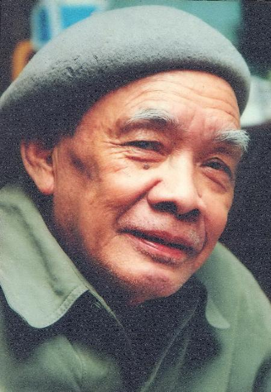

Sau Người Thăng Long, nhà văn Hà Ân định viết tập tiếp theo với nhân vật chính là Trần Quốc Tảng, một ông hoàng trẻ văn võ song toàn lại rất ngạo đời. Nhưng khi biết những vần thơ hào sảng trong bài Phóng cuồng ca không phải của Trần Quốc Tảng, ông đã thất vọng và đốt đi hàng trăm trang bản thảo. Tưởng rằng tác phẩm không thể hoàn thành. Nhưng rồi ông bắt “gặp” Đỗ Vĩ, một tình báo tài giỏi của Nhà Trần, một nghệ sĩ đàn ngọt, thơ hay, bút vẽ thần tình, đường kiếm siêu việt... Và thế là Khúc khải hoàn dang dở ra đời, sau hai mươi năm. Như một bản hùng ca mãi mãi âm vang trang sử hào hùng và ghi dấu bóng hình người tình báo chiến lược tài ba Đỗ Vĩ cùng những tướng sĩ kiêu hùng, những người con ưu tú của dân tộc.

Nhà văn HÀ ÂN (1928-2011)
Tên thật là Hoàng Hiển Mô, quê ở Hà Nội.
Ông gia nhập Trung đoàn thủ đô liên khu I năm 1947, rồi làm trưởng ty Hoa kiều vụ tỉnh Lào Cai năm 1948. Năm 1955, ông về làm giáo viên văn hóa ở Trường Quân y và Hậu cần.
Từ năm 1964, ông làm biên tập viên tại Nhà xuất bản Hà Nội…
Ông nổi tiếng với các tác phẩm tiểu thuyết lịch sử, truyện kể lịch sử, dã sử và được tặng các giải thưởng: Giải C Giải văn học thành phố Hà Nội cho tiểu thuyết lịch sử Ngàn năm Thăng Long; Giải bồ câu vàng kịch bản phim hoạt hình Ông Trạng thả diều; Nhiều lần giải A văn học thiếu nhi Trung ương Đoàn; Giải khuyến khích kịch bản hoạt hình Ngựa thần Tây Sơn.
TÁC PHẨM ĐÃ XUẤT BẢN:
• Tướng quân Nguyễn Chích (truyện lịch sử, 1962)
• Quận He khởi nghĩa (truyện lịch sử, 1963)
• Nguyễn Trung Trực (truyện lịch sử, 1964)
• Phú Riềng đỏ (ký lịch sử, 1965)
• Bên bờ Thiên Mạc (truyện lịch sử, 1967)
• Tổ quốc kêu gọi (tiểu thuyết lịch sử, 1973)
• Trên sông truyền hịch (truyện lịch sử, 1973)
• Trăng nước Chương Dương (truyện lịch sử, 1975)
• Người Thăng Long (tiểu thuyết lịch sử, 1980)
• Lưỡi gươm nhân ái (truyện lịch sử, 1981)
• Ông Trạng thả diều (truyện lịch sử, 1982)
• Cái chum vàng (truyện lịch sử, 1986)
• Vụ án trầu cánh phượng (truyện lịch sử, 1990)
• Kho báu dưới gốc hoàng đào (truyện lịch sử, 1993)
• Mùa chim ngói (tập truyện, 1995)
• Khúc khải hoàn dang dở (tiểu thuyết lịch sử, 2002)